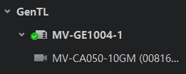

GenTL管理
GenTL标准提供一个统一的接口，不仅可对采集卡进行参数控制，还可使客户端在不依赖于底层传输技术的情况下连接相机，与相机通信，甚至直接获取相机采集的数据。
加载cti文件
设备列表选中GenTL，单击 ，手动选择需要的cti文件后单击打开即可枚举该cti文件下的所有采集卡。
，手动选择需要的cti文件后单击打开即可枚举该cti文件下的所有采集卡。
加载cti文件后，可通过设备列表GenTL右侧的 手动刷新枚举到的采集卡。
手动刷新枚举到的采集卡。
设备操作
通过设备列表的GenTL接口，可对枚举出的采集卡以及采集卡下连接的相机进行相关操作。
-
采集卡：加载cti文件后，设备列表的GenTL会显示加载该cti文件枚举到的采集卡并可进行相关操作。对于不同状态的采集卡，设备列表的采集卡图标有所差别，采集卡的状态说明请见下表。
表 1 采集卡状态介绍 图标
状态
含义

可用
采集卡处于可用状态，可正常连接和使用。
打开
客户端已经打开该采集卡，可进行采集卡参数设置等操作，并枚举采集卡下连接的相机。
-
采集卡参数设置：点击打开采集卡，右侧显示采集卡属性树，即可对采集卡进行参数设置，具体介绍请参见采集卡相应接口的用户手册。
-
保存采集卡GenlCam文件：点击打开采集卡，选中采集卡右键点击保存GenlCam XML，可将当前打开采集卡的GenlCam文件以XML格式保存到本地PC，导出文件名默认为采集卡型号。
-
-
相机：打开采集卡后，可获取通过采集卡连接的相机，双击连接相机，右侧可显示相机的属性树，可对相机进行参数设置和图像预览等操作。
说明必须先打开采集卡才可枚举通过采集卡连接的相机。

图 1 显示枚举的采集卡及连接的相机-
刷新相机：加载cti文件后，可通过设备列表GenTL右侧的
手动刷新连接的相机。 -
单一相机的固件升级：选中相机右键点击固件升级，点击选择固件升级包（dav文件），点击升级按钮即可。
-